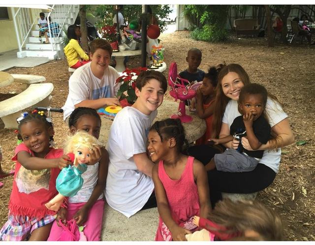

The Day Isabella Met Charity

Isabella had turned three years old and could not have had a care in the world. She lived on Balboa Island in Newport Beach, California and had the love of two parents who loved each other. Her life was abundance in every sense of the word — protected, sheltered and loved.
Cleaning out our closets and preparing to donate our less-used clothing, I was on the phone making arrangements to have our family clothing picked up and donated to Charity. Upon hanging up the phone, Isabella asked me if Charity was the name of a little girl who lives in Santa Ana, a neighboring, less fortunate town.
My Dad, Arthur, had always taught me:
“To live by my actions, not only by my word. It is never enough to talk about it, unless you walk the talk and set the example.”
I knew I could not wait and lose the opportunity to teach my daughter, Isabella, a lesson for her life.
We immediately loaded the clothes into our new SUV and drove to a family transitional shelter in Santa Ana — The Orange County Interfaith Shelter. It was there where Isabella first was introduced to Charity, and played with many, many less fortunate children, giving them her clothing from her closet, her high chair and her baby car seat.
That face-to-face, heart-to-heart interaction for Isabella set in motion a young lifetime of giving. And on that day, in that moment, Dads for Giving was born.